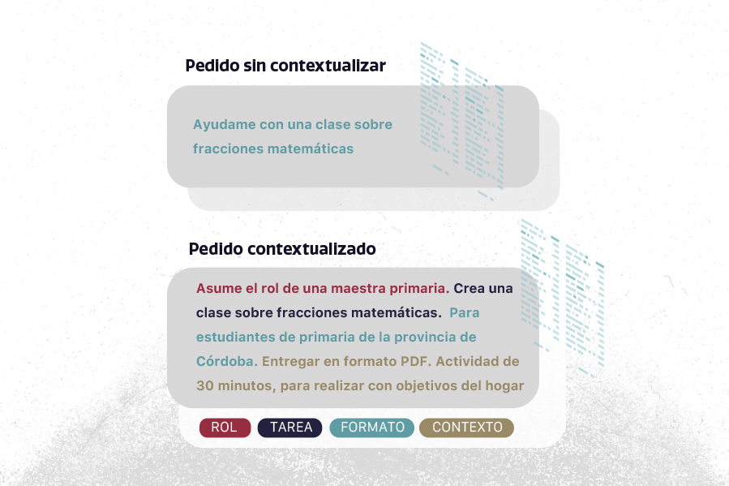

⏱️ Tiempo estimado de exploración: 15 a 20 minutos.
Cuando hacemos una pregunta a un modelo de lenguaje, solemos enfocar la atención en el tema principal de la consulta. Sin embargo, la cantidad y el tipo de información contextual que acompañan esa pregunta pueden cambiar de manera significativa la respuesta que obtenemos.
En esta exploración vamos a analizar cómo responde un modelo cuando variamos la información de contexto en una misma solicitud.
Experimento 2: Del pedido genérico al contexto situado
1. Copiá este primer prompt (sin contexto) y pegalo en tu asistente de IA:
2. Leé la respuesta.
Ahora abrí un chat nuevo y probá este segundo prompt (con contexto):
Observemos las diferencias entre ambas respuestas:
¿Qué decisiones metodológicas tomó la IA cuando no le diste contexto?
¿De qué manera cambió la estructura y la utilidad del texto en la segunda opción?
¿Qué elementos del contexto fueron tomados en cuenta de forma explícita?
¿Cuál de los dos resultados requeriría mayor trabajo de adaptación por tu parte?
Cuando la consigna es breve o indeterminada, el modelo debe completar los vacíos de información recurriendo a las asociaciones más frecuentes de sus datos de entrenamiento. Por eso, las respuestas genéricas suelen parecer abstractas o estandarizadas.
Al incorporar restricciones, destinatarios, enfoques pedagógicos y límites de tiempo, reducimos el margen de ambigüedad. El modelo utiliza esa información contextual como una "ventana" más estrecha para seleccionar y organizar las palabras que siguen.

El contexto actúa como un filtro: mientras más preciso es el marco, más pertinente es el resultado del modelo.
El diseño de un prompt eficaz no requiere fórmulas mágicas, sino estructurar con claridad los elementos indispensables para orientar al modelo hacia lo que necesitamos.
• Rol/Contexto: En qué marco te encontrás o qué perspectiva querés que asuma.
• Tarea: Qué acción precisa querés que realice el modelo.
• Audiencia: A quién está dirigido el resultado.
• Formato: Estructura deseada (lista, tabla, párrafos cortos, etc.).
• Restricciones: Qué aspectos debe evitar o qué límites debe respetar.
Llegaste al final de la exploración del Caso 2. Podés guardar tus registros para consultar más adelante o compartir con tu equipo de trabajo.